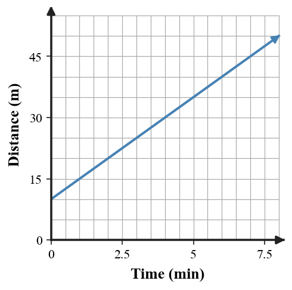

2.
The graph shows a cost relationship. Use the graph to estimate the cost for $8$ tickets and explain how you used the axes.

This extra practice brings together current work, mastery spiral skills, and the previous-section spiral. Use it to check readiness before the CYU.
A table has outputs $4, 7, 10, 13$ as inputs increase by $1$. What is the repeated change in the outputs?
The graph shows a cost relationship. Use the graph to estimate the cost for $8$ tickets and explain how you used the axes.
Compare the graph and context. Context: A cyclist starts $4$ miles from home and rides away at $2$ miles per hour. Decide whether the graph could model the context and justify your conclusion with the intercept and rate.

You are given two facts about one relationship: when $x=0$, $y=9$; when $x=4$, $y=21$. Synthesize a table, equation, context, and one additional point that all represent the same relationship. Explain how each representation shows the same starting value and change.
Write each mixed number as an improper fraction and each improper fraction as a mixed number.
Order the numbers from least to greatest.
$-1.4,\quad -\frac{7}{5},\quad -1\frac{1}{3},\quad -1.08$
Evaluate $\left(-\frac{3}{5}+1.4\right)\div\left(-0.2\right)$. Show the order of operations and include at least one check for sign reasonableness.
A taxi-like ride model uses $4+1.5m$ minutes to estimate pickup and travel time for $m$ miles. Evaluate the expression for $m=6$ and interpret the value.
Analyze the structure of $4(3+x)^2$. Explain why squaring must happen before multiplying by $4$, and describe a different expression that would mean "multiply $3+x$ by $4$, then square."
A context says: "Start with $18$ points, lose $2$ points for each mistake, and then triple the result." Compare $3(18-2m)$ and $18-2(3m)$. Which expression fits the context, and what evidence supports your choice?
A game rule says a player loses $\frac{1}{4}$ point for each warning and gains $0.6$ point for each successful round. Revise a flawed score sheet that shows $5$ warnings and $4$ successful rounds as a positive total of $3.15$ points. Explain the corrected score.
Create an expression with one variable that uses parentheses, an exponent, and subtraction. Choose an input value so the expression evaluates to $10$. Show the evaluation pathway.
Read the table of points and name the $y$-intercept.
| Point | $x$ | $y$ |
|---|---|---|
| A | 0 | 7 |
| B | 2 | 11 |
| C | 4 | 15 |
A graph of height over time passes through $({0},{3})$, $({4},{11})$, and $({8},{19})$. Create a table and describe what the point $({4},{11})$ means.
Compare the table and the graph. Decide whether they could represent the same relationship, and justify your conclusion with at least two pieces of evidence.
| $x$ | 0 | 2 | 4 | 6 |
|---|---|---|---|---|
| $y$ | 10 | 20 | 30 | 40 |

Create a coordinate graph with constraints: the $y$-intercept must be ${6}$, one point must be $({4},{14})$, and the context must make negative outputs unreasonable. Then explain why your graph satisfies all constraints.